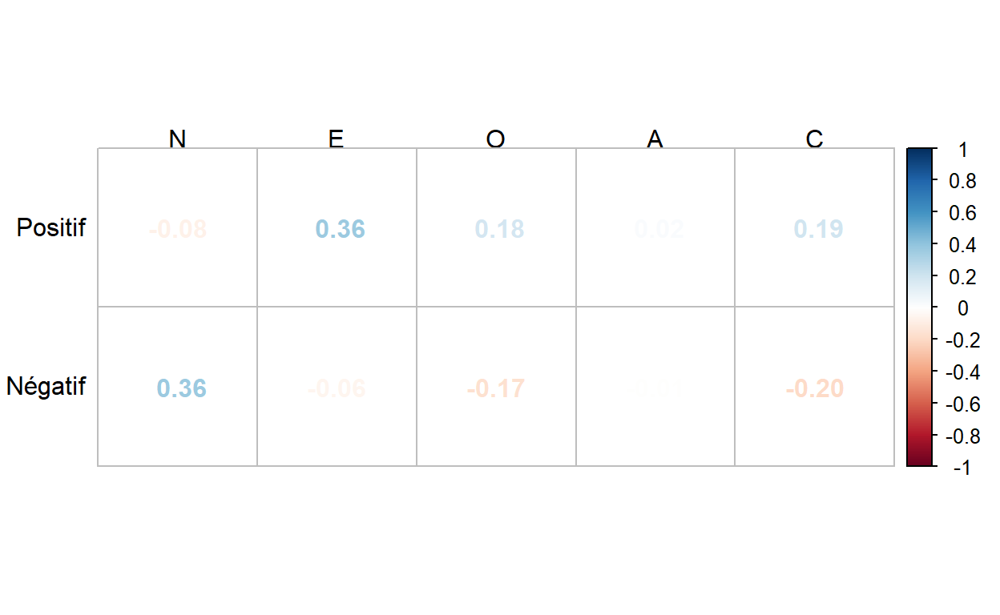

Les psychologues qui travaillent en prison tentent d’exercer des actions bienveillantes dans un milieu historiquement punitif suscitant des représentations négatives. Cette étude vise à évaluer le rapport que ces psychologues entretiennent avec l’institution carcérale et le lien entre leur personnalité et ce vécu institutionnel. Cinquante-cinq psychologues issus du milieu pénitentiaire en France ont répondu à un questionnaire diffusé sur internet. Les résultats indiquent que les psychologues carcéraux présentent des traits de personnalité moins agréables (d = -.62) et plus consciencieux (d = 1.13) que l’échantillon normatif du BFI-10-fr. Ils évoquent deux rapports à la prison : un positif respectueux de leur déontologie et un autre négatif influencé par les contraintes carcérales. L’extraversion des psychologues est positivement corrélée (r = .36) avec le vécu institutionnel positif alors que le névrosisme est positivement corrélé (r = .36) avec le vécu institutionnel négatif. Il semble donc exister des caractéristiques psychologiques qui facilitent le travail en prison.
Être psychologue en prison ne va pas de soi. Héritiers d’une tradition philosophique et médicale, les psychologues se conçoivent souvent comme des pourvoyeurs de soins à des personnes qui sont en souffrance. A contrario, historiquement, la prison est un lieu de punition c’est-à-dire qu’elle exerce une action négative sur les personnes condamnées pour avoir enfreint les règles sociales (ex. : sanctions, restriction des libertés, enfermement, surveillance, manque d’intimité, stress, etc.), à des fins de réhabilitation (Wilks et Martinson 1976).Exercer le métier de psychologue dans une institution punitive n’est dès lors pas simple a priori, d’autant plus que le psychologue a à faire avec la notion ambivalente d’aide contrainte ou d’injonction aux soins (Goldbeter-Merinfeld 2011). En effet, même s’il n’y a pas d’obligation stricte aux soins en milieu carcéral, l’accès à des réductions ou des aménagements de peine se trouve fortement encouragé par le cadre légal (Savin 2015), impliquant donc une demande et une adhésion plutôt stratégique au soin. Tout le travail du psychologue est alors de transformer avec le détenu cette demande d’aide stratégique en une demande d’aide plus authentique.. Dans ce cadre, comment les psychologues travaillant en prison perçoivent-ils leurs actions auprès des détenus ? Il existe, à notre connaissance, peu voire pas d’études investiguant les traits de personnalité et le vécu institutionnel des psychologues en prison, la littérature étant majoritairement centrée sur les détenus. Dans ce texte, nous présentons brièvement les différents types de prisons en France. Ensuite, les résultats issus des réponses que nous ont communiquées des psychologues qui y travaillent à des questions relatives à leur vécu institutionnel mais aussi à leur personnalité. Nous pourrons dès lors nous intéresser à d’éventuels liens entre ces vécus institutionnels et la personnalité.
Les prisons françaises sont des lieux privatifs de liberté présidés par l’administration pénitentiaire (AP), qui depuis 1911, est elle-même rattachée au ministère de la Justice. Le rôle des établissements pénitentiaires est avant tout d’assurer la sécurité de la société contre les individus présentant un caractère dangereux en participant à l’exécution des décisions et sentences pénales. Elle a également pour but de favoriser leur réinsertion et de prévenir le risque de récidive (DAP 2007). En France, il existe différents types d’établissements pénitentiaires, qui sont placés en deux grandes catégories : les maisons d’arrêt et les établissements pour peine (Justice 2017). La DAP (2007), les décrit comme suit :
Les maisons d’arrêt reçoivent les prévenus (détenus en attente de jugement), ainsi que les condamnés dont le reliquat de peine n’excède pas deux ans, en théorie.
Les établissements pour peine sont divisés en maisons centrales qui accueillent les personnes détenues condamnées à une longue peine et/ou présentant des risques de dangerosité plus élevés, ces établissements sont orientés sur la sécurité :
En France, il existe actuellement 186 établissements pénitentiaires. Parmi eux, 81 maisons d’arrêt, 98 établissements pour peine regroupant 6 maisons centrales, 25 centres de détention, 9 centres de semi-liberté et 58 centres pénitentiaires. Finalement, nous comptons 6 établissements pénitentiaires pour mineurs et un établissement public de santé national (EPSNF), situé en Île-de-France, à Fresnes (Justice 2021). Ce dernier assure la prise en charge somatique des personnes placées sous-main de justice (PPsMJ) (Chodorge et al. 1993).
Les participants sont des psychologues exerçant leur profession au sein d’établissements pénitentiaires en France. L’échantillon est constitué de 55 psychologues dont 7 (13%) sont des hommes et 48 (87%) sont des femmes. La moyenne d’âge est de 29.53 ans (ET = 6.38, Min = 23, Max = 51). Ils ont, en moyenne, 5.58 ans d’expérience en milieu carcéral (ET = 6.43, Min = 0, Max = 25).
Les données collectées et utilisées pour la réalisation de cette étude ont été obtenues via la diffusion de d’un questionnaire en ligne via la plateforme Lime Survey. Cette enquête en ligne avait pour objectif d’investiguer des variables plus larges que celles exploitées dans la présente rédaction (données socio-démographiques, traits de personnalité, vécu institutionnel, le contre-transfert et la pathologie mental des détenus). Au préalable, les différents instruments utilisés ont tous été encodés sur la plateforme sécuriséeLime Survey nous ayant permis de créer un unique questionnaire et nous permettant sa diffusion. Nous avons donc procédé à la diffusion en ligne sur différents réseaux sociaux (LinkedIn et divers groupes de psychologues sur Facebook). Cela nous a également permis de diffuser cette recherche au sein des syndicats des psychologues français et de l’élargir à toute la France. De plus, par le « bouche à oreille », le questionnaire a été transféré à plusieurs personnes par mail. En parallèle de la diffusion sur les réseaux, nous avions de multiples contacts et connaissances de psychologues à qui nous avons envoyé le questionnaire par mail, en précisant le contenu de notre étude ainsi que son objectif. Pour ce faire, nous avons créé un texte expliquant l’intérêt de la recherche ainsi que la population ciblée. Le lien du questionnaire était inclus afin qu’ils puissent cliquer dessus pour être directement redirigés vers le Lime Survey La page d’accueil du questionnaire informait les potentiels participants quant à l’objectif de la recherche, la confidentialité des données (anonymat), la structure du questionnaire ainsi que sa durée de passation estimée (entre 30 et 40 minutes). En décidant de poursuivre le questionnaire, les participants marquaient leur consentement volontaire à la recherche en conformité avec les principes éthiques de la Déclaration d’Helsinki et du Règlement Général sur la Protection des Données (RGPD). Nous avons également indiqué que les personnes intéressées par l’étude pouvaient nous contacter directement par mail ou en message privé (sur Facebook et LinkedIn) pour recevoir un compte rendu des principaux résultats de cette étude. Nous avons clôturé notre questionnaire après deux mois de mise en ligne et plusieurs rediffusions. Toutes les deux semaines environs, nous repartagions notre étude afin de la réactualiser dans les fils d’actualité et groupes de psychologues.
Les participants étaient invités à remplir deux questionnaires : le Big Five Inventory - version courte (BFI-10) et un questionnaire de rapport avec l’institution carcérale.
Le BFI-10-fr (Courtois et al. 2020) est une version courte du BFI-fr (Plaisant et al. 2010). La version française a été traduite et validée sur base de la version originale (John, Donahue, et Kentle 1991). Le questionnaire mesure les cinq dimensions de personnalité du modèle original précédemment cité : O (Ouverture, Originalité, Ouverture d’esprit), C (Conscience, Contrôle, Contrainte), E (Extraversion, Énergie, Enthousiasme), A (Agréabilité, Altruisme, Affection) et N (Émotions Négatives, Névrosisme, Nervosité). Le BFI-10 comporte dix items, côtés sur une échelle de Likert en cinq points, allant de Désapprouve fortement (1) à Approuve fortement (5). Certains des items sont inversés (items 1, 2, 4, 8 et 10). Lors de la cotation il convient de les inverser de telle sorte que 1 = 5, 2 = 4, 3 = 3, 4 = 2 et 5 = 1. Les notes respectives aux cinq dimensions sont additionnées dans le but d’obtenir un score total à chacune d’entre elles. Plus le score est élevé à chaque dimension, plus la personne évaluée présente des traits de personnalité relative à celle-ci. Selon plusieurs auteurs (Balgiu 2018 ; Courtois et al. 2020 ; Rammstedt et al. 2013 ; Rammstedt et John 2007), le BFI-10-fr a démontré une fiabilité et une validité satisfaisante.
Le questionnaire se présente ainsi :
Je me vois comme quelqu’un qui…
Nous avons élaboré un questionnaire composé de six items côtés sur une échelle de Likert en quatre points allant de 1 « pas du tout d’accord » à 4 « tout à fait d’accord ». Les items investiguent le ressenti général des psychologues concernant les suivis proposés à leurs patients ; par rapport à leur déontologie ; à leur identité professionnelle ; ainsi que par rapport aux contraintes liées au milieu pénitentiaire (cadre, surveillants, disputes, situations difficiles pouvant être rencontrées). Les questions étaient les suivantes :
Après avoir réalisé plusieurs analyses descriptives afin de décrire le profil socio-démographiques des participants (âge, genre, nombre d’années d’expérience), des analyses similaires ont été effectuées sur les scores aux BFI-10-fr et au questionnaire sur le vécu institutionnel. A l’aide de test t à échantillon unique, les scores au BFI-10-fr ont été comparés aux normes de l’étude de validation de l’instrument (Plaisant et al. 2010). Une analyse factorielle exploratoire a été effectuée suite aux analyses descriptives sur les scores au questionnaire sur le rapport à l’institution carcérale, en raison de l’émergence d’une hypothèse d’un double vécu : positif marqué par une satisfaction professionnelle par rapport à l’identité professionnelle, la réalisation des suivis et les aspects déontologiques, et négatif marquée par les contraintes et difficultés inhérentes au cadre institutionnel. Enfin, des analyses corrélationnelles, à l’aide du Rho de Spearman (en raison du petit échantillon et de distributions des variables ne répondant pas à l’hypothèse de normalité), ont été faites entre les scores au BFI-10-fr et les items du questionnaire sur le rapport à l’institution carcérale pour investiguer le lien potentiel entretenu entre la personnalité et le vécu institutionnel dans un tel cadre.
Le tableau 1 montre les statistiques descriptives des cinq variables du BFI-10 pour les psychologues et les compare avec les normes proposées par Plaisant et al. (2010).
| Variable | Moyenne | ET | Norme | t | p | Delta |
|---|---|---|---|---|---|---|
| N - Névrosisme | 3.22 | 1.17 | 3.00 | 1.38 | .174 | 0.36 |
| E - Extraversion | 3.34 | 1.14 | 3.20 | 0.89 | .378 | 0.17 |
| O - Ouverture | 3.48 | 1.03 | 3.50 | -0.13 | .896 | -0.03 |
| A - Agréabilité | 3.53 | 0.76 | 3.90 | -3.64 | .001 | -0.62 |
| C - Conscience | 4.19 | 0.74 | 3.40 | 7.90 | < .001 | 1.13 |
L’échantillon présente pour l’ensemble des dimensions de personnalité des scores supérieurs à la moyenne (2.50) où la conscienciosité est la plus élevée et le névrosisme le plus faible. De plus, notons que selon ces résultats, les psychologues carcéraux français seraient moins agréables et plus consciencieux que l’échantillon normatif. Ce score élevé en conscience est intéressant car semble confirmer que les personnes qui évoluent en prison sont plus contrôlés que les autres, tant les détenus (Eriksson, Masche-No, et Dåderman 2017; Shimotsukasa et al. 2019 ; Thiry 2012) que le personnel de surveillance (Eriksson, Masche-No, et Dåderman 2017). Selon ces derniers auteurs :
L’environnement carcéral est très strict tant en termes de régulation que de normes et d’espace personnel limité. Un tel environnement incite les détenus à acquérir de l’ordre pour éviter tant des punitions formelles que les actes négatifs des codétenus [p. 243, traduction personnelle]
L’hypothèse explicative potentielle est que tant les détenus que les professionnels qui travaillent régulièrement en prison s’adaptent aux règles qui la régissent de telle sorte qu’ils se montrent plus contrôlés, ordonnés et scrupuleux. Nos résultats invitent à penser que les psychologues s’adaptent également (consciemment ou non) à la rigueur carcérale. De plus, les traits de personnalité indiquant une caractéristique stable au cours du temps, ces résultats pointent également que les psychologues ayant ces traits de personnalité se dirigent potentiellement plus facilement vers ce cadre de travail rigoureux cohérent avec cette structure de personnalité. Qu’en est-il justement de cette rigueur carcérale ?
De manière générale, l’analyse descriptive indique, en rapport avec l’étendue des scores (de 1 à 4) que l’échantillon est relativement d’accord avec l’ensemble des propositions investiguant leur vécu institutionnel avec un degré d’accord le plus élevé concernant les aspects déontologiques et un degré d’accord le plus faible concernant le sentiment de proposer des suivis de qualité (2). Dans l’ensemble, les psychologues carcéraux ont l’impression d’effectuer un travail de qualité respectueux de leur cadre déontologique bien qu’ils puissent reconnaître en même temps que le cadre carcéral induise des contraintes et les confrontent à des situations difficiles. Ils semblent défendre l’idée qu’il y a moyen d’évoluer professionnellement dans un cadre de travail difficile tout en préservant une identité professionnelle positive et constructive.
| Questions | Variables | Moyenne | ET |
|---|---|---|---|
| Dans ma réalité quotidienne, j’ai le sentiment de proposer des suivis de qualité à mes patients. | insti1_suivis | 2.84 | 0.54 |
| Dans mon travail quotidien, je me sens à l’aise avec ma déontologie (par exemple, avec le secret professionnel). | insti2_deonto | 3.38 | 0.62 |
| Je me sens bien dans mon identité professionnelle. | insti3_idprof | 3.35 | 0.58 |
| Je suis content(e) de me lever pour aller travailler. | insti4_lever | 3.38 | 0.56 |
| En tant que soignant, je ressens des contraintes liées au contexte pénitentiaire dans mes prises en charge (Ex : cadre, confusion justice/soin, …). | insti5_contraintes | 3.20 | 0.68 |
| Dans le cadre de mon travail en milieu pénitentiaire, je suis confronté(e) à des situations difficiles occasionnées par l’institution (Ex : disputes avec les surveillants, tentatives de suicide, …). | insti6_difficultes | 3.16 | 0.79 |
Nos données nous permettent-elles de soutenir l’existence de ces deux enjeux professionnels (vécus positifs et contraintes) ? Afin de répondre à cette question, nous procédons à une analyse factorielle des six variables de rapport à l’institution.
Comme attendu, le l’analyse factorielle semble mettre en évidence deux vécus distincts exprimés par les psychologues au regard de nos questions (Tableau 3) :
| Résultats de l’analyse factorielle sur les items du questionnaire sur le rapport à l’institution carcérale | |||||
| Facteur_1 | Facteur_2 | Communalité | Unicité | Complexité | |
|---|---|---|---|---|---|
| insti6_difficultes | 0.872 | -0.029 | 0.78 | 0.22 | 1.00 |
| insti5_contraintes | 0.714 | 0.044 | 0.49 | 0.51 | 1.01 |
| insti4_lever | -0.214 | 0.048 | 0.05 | 0.95 | 1.10 |
| insti3_idprof | -0.032 | 0.706 | 0.51 | 0.49 | 1.00 |
| insti1_suivis | 0.163 | 0.425 | 0.16 | 0.84 | 1.29 |
| insti2_deonto | -0.090 | 0.347 | 0.15 | 0.85 | 1.13 |
Ces deux types de vécus résultent très probablement du paradoxe caractérisant le milieu carcéral : d’une part se vouloir punitif et donc potentiellement violent du moins symboliquement et environnementalement ; d’autre part alimentant l’idée qu’il faut offrir une aide soutenante et donc bienveillante aux détenus. La première mouvance est l’écho d’une vindicte populaire canalisée par le système pénal officiel dont le but avoué est de corriger le délinquant. Pour deBrouwer (2012, 154), “la foi en la ‘corrigibilité’ du délinquant doit avoir pour effet de lui rendre sa capacité à réintégrer la société”. Or, cette vindicte du pouvoir judiciaire est porteuse d’une charge sadique qui vise, consciemment ou non, à faire souffrir toute personne qui aurait porté atteinte au corps social. Cette mouvance sadique est très contagieuse en prison. En effet, elle glisse aisément d’une personne à une autre. Ainsi le système carcéral est-il susceptible de violenter toute personne estimée complice des actes du détenu : sa famille, son avocat ou encore tout intervenant tentant de l’aider. Par exemple, un professionnel trop zélé à porter assistance à un détenu suspecté de terrorisme court le risque de susciter de la méfiance à son égard et de faire dès lors l’objet d’un contrôle accru. C’est sous couvert d’un contrôle à visée sécuritaire que le sadisme carcéral est susceptible de se manifester. Les psychologues carcéraux peuvent ainsi se retrouver objets de ce sadisme déguisé. Les présents résultats tendent à indiquer que les traits de personnalité présentés par les psychologues sont majoritairement positifs et bienveillants nuançant l’effet de cette hypothèse.
De plus, du fait de leur formation, les psychologues sont également sensibilisés à des modèles humanistes de nature bienveillante et à des principes éthiques qui sont partagés par toutes professions d’assistance, qu’elles soient médicales ou sociales. Par conséquent, les psychologues sont censés être vecteurs de ces principes humanistes.
Nos résultats indiquent que les deux enjeux, bien que très différents, coexistent dans la pratique de la plupart des psychologues interrogés. Une question peut ici se poser : certains psychologues sont-ils plus ou moins sensibles à ces deux enjeux ? Leur personnalité a-t-elle un impact sur ceux-ci ? Pour répondre à cette question, nous avons corrélé les deux variables de vécu institutionnel aux cinq variables du modèle de personnalité en cinq facteurs. La Figure 1 présente les indices de corrélations (Rho de Spearman) pour ces variables.

Figure 1: Corrélations entre personnalité et vécu institutionnel
L’analyse corrélationnelle révèle peu de corrélations significatives, seules deux corrélations d’intensité modérée sont significatives à p < .001 :
Les autres corrélations, bien qu’intéressantes, impliquant l’ouverture d’esprit et la tendance à la maîtrise ne sont pas suffisamment marquées pour qu’on les retienne d’un point de vue statistique. Le caractère plus ou moins agréable du psychologue est clairement indépendant du vécu professionnel.
Ces résultats sont cohérents car l’extraversion est classiquement reconnue comme liée à des vécus positifs (ex. : être enthousiaste, assertif, sociable) alors que le névrosisme renvoie davantage à des vécus douloureux et négatifs, la tendance à ressentir des émotions négatives (ex. : colère, anxiété, dépression), le contexte institutionnel favorisant aussi bien le défi que l’adversité professionnelle. Ils nous permettent toutefois de soutenir l’hypothèse que la dynamique institutionnelle fait office de caisse de résonance des vécus personnels. En effet, un psychologue extraverti aura tendance à se lier plus facilement à ses collègues et à se solidariser avec eux afin de défendre une pratique respectueuse de son groupe professionnel. Il sera alors d’autant plus sécurisé dans ses interventions qui consolideront son identité professionnelle. Les psychologues très anxieux, quant à eux, semblent plus sensibles aux contraintes du système carcéral de sorte que les tensions institutionnelles amplifieront leurs propres tensions personnelles. Ils sont dès lors susceptibles de souffrir davantage des dysfonctionnements carcéraux et d’être confrontés à des ruminations désagréables desquels ils rencontreraient des difficultés à s’extraire. Il est dès lors probable qu’un profil de personnalité N-E+ constitue un terrain protecteur au travail psychologique en prison. McCrae et Costa (2016, 3) qualifient les personnes qui présentent ce style d’optimistes et proposent une description de ce style en ces termes :
Ces personnes sont généralement joyeuses car elles ont tendance à ne pas se laisser troubler par les problèmes et savent la plupart du temps apprécier les plaisirs de la vie. Lorsqu’elles sont frustrées ou déçues, elles peuvent éventuellement céder à la colère ou à la tristesse, des sentiments qu’elles peuvent néanmoins laisser rapidement de côté. Elles préfèrent souvent se concentrer sur l’avenir, qu’elles ont hâte de découvrir. Elles sont généralement capables de savourer l’existence.
Notons que les scores d’extraversion et de névrosisme ne sont pas toujours antinomiques : il y a moyen d’avoir des scores élevés ou bas simultanément à ces deux variables. En effet, l’approche du modèle de personnalité en cinq facteurs renvoie à une conception dimensionnelle et non catégorielle de la personnalité, ce qui induit qu’un individu présente les différentes dimensions avec un certain degré d’intensité
Les résultats de cette étude invitent à penser que certains psychologues éprouvent plus de facilités que d’autres à travailler en milieu carcéral. Ainsi, il semble qu’une extraversion et une stabilité émotionnelle permettent de favoriser l’assise professionnelle (probablement grâce aux relations interpersonnelles, par exemple avec les collègues) et de résister plus facilement aux tensions propres à la prison. Il ne s’agit bien entendu pas d’attendre que les intervenants modifient leur personnalité mais plutôt d’avoir conscience qu’elle est susceptible d’avoir un impact sur le rapport qu’il entretient avec l’institution carcérale. Cette conscience permettrait dès lors d’être travaillée de manière plus explicite avec les autres membres de l’équipe.
En conclusion, la présente recherche investigue, à l’aide d’une méthode quantitative, le domaine encore trop peu exploré du rapport entre la personnalité et le vécu institutionnel au sein d’une population dont la réalité professionnelle reste insuffisamment investie qu’est le psychologue au sein du milieu carcéral. Les principaux résultats mettent en exergue que les psychologues carcéraux représentent une population professionnelle aux traits de personnalité majoritairement positifs particulièrement marqués par la dimension de la Conscienciosité. Leur vécu professionnel est double et oscille entre une vécu positif marqué par la satisfaction relative à la qualité de leurs suivis, à leur identité professionnelle et aux principes déontologiques de ce cadre et un vécu négatif marqué par les contraintes et difficultés propres au milieu carcéral. La personnalité entretient un lien modéré avec ce vécu, principalement entre l’extraversion et le vécu positif, et entre le névrosisme et le vécu négatif. Bien que cette recherche présente plusieurs limites relatives au caractère restreint de l’échantillonnage, l’utilisation d’une mesure auto-construite du vécu institutionnel ou encore l’absence de variables contrôles telles que la désirabilité sociale, ces résultats ont une implication aussi bien pour le recrutement et la formation des professionnels aux aspects psycho-organisationnels. Elle implique également des recommandations importantes en termes de cible d’attention ou de soutien concernant la santé psychologique et organisationnelle de ces professionnels.
If you see mistakes or want to suggest changes, please create an issue on the source repository.
Text and figures are licensed under Creative Commons Attribution CC BY 4.0. Source code is available at https://github.com/ouriagan/blog, unless otherwise noted. The figures that have been reused from other sources don't fall under this license and can be recognized by a note in their caption: "Figure from ...".
For attribution, please cite this work as
Thiry, et al. (2023, Feb. 8). Psychologie et délinquance: Être psychologue en prison : liens entre vécus institutionnels et personnalité. Retrieved from https://benjaminthiry.netlify.app/posts/2023-02-08-psychologuesprison/
BibTeX citation
@misc{thiry2023être,
author = {Thiry, Benjamin and Waymel, Valentine and Telle, Emilie},
title = {Psychologie et délinquance: Être psychologue en prison : liens entre vécus institutionnels et personnalité},
url = {https://benjaminthiry.netlify.app/posts/2023-02-08-psychologuesprison/},
year = {2023}
}